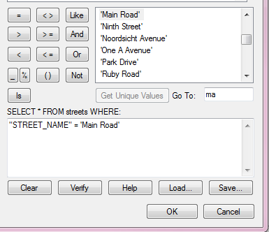
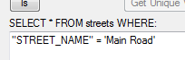

Welcome to Advanced GIS, Lecture 4
This is a web page that can be viewed as slides.
→ to move forward
← to go back
geocoding
buffer
convex hull
SQL
What does this do?
SELECT *
FROM education
And what does this do?
SELECT *
FROM education
WHERE students > 100


SQL shows up everywhere online
SELECT *
FROM rooms
WHERE id=4789513
1. pulling data out of the database
2. changing the data in the database
you can also use SQL to quickly UPDATE or DELETE the data in your table
these will destroy data, so have a backup or test it with a table you don't need
this is one way to customize the way data is displayed in your pop-ups
first, create a new column on your table
then put the desired data in that column, based on some condition
UPDATE education
SET st_ratio = students / teachers
DELETE FROM education
WHERE ...
SQL shows up everywhere online
SELECT cartodb_id,
ST_Transform(the_geom, 3573)
AS the_geom_webmercator
FROM my_table
let's talk about project proposals
projects must:
- be online
- require a reasonable amount of effort
- use techniques covered in class
projects might:
- contain multiple maps
- contain multiple, connected pages
- mix scales (eg world-wide + city-wide)
- mix types of data (eg quantitative + qualitative)
map kibera
1. trace the roads using aerial imagery
2. use GPS to collect point data and correct roads
"In the intense density of Kibera, selecting which features are 'important' is a judgment call and a matter of interest."
Map Kibera Blog
(week one)
~1997 - today
- GPS
- the web changed
- more data became available
- FOSS became mainstream
HTML
defines the structure of a page, loads other bits
HTML
CSS
adds style to parts of a page
CSS
JavaScript
makes web pages dynamic (eg AJAX)
JavaScript
JavaScript
JavaScript
your browser loads the HTML, which tells it which CSS and JavaScript files to get (if any)
if you want something to be online, it has to be on a server somewhere
imgur.com
neocities.org
pages.github.com
adding images to pop-ups